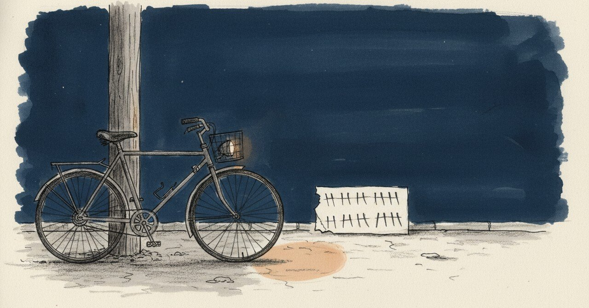

自転車15キロをAIに任せた深夜から、誕生日に自分で筋トレ回数を増やすまで

2024年12月9日、午前1時42分、ノートに「今日一日、充実してた」と書いた。
今日の現場
2026年3月25日、誕生日。
睡眠8時間、感情4（強度5/10）。事実は短く3つまで、解釈はなし。今のジャーナリングのフォーマットだ。
書いた事実：「最近会う人から誕生日おめでとうLINEと、今後のこと共有したいから会おう、ってお誘い」「3日間の名古屋へのヘルプ勤務、今日で終わった」。
そして1行、こう足した。「筋トレは今日回数増やした！」。
ジャーナリング、概ね毎日続いてる。筋トレも続いてる。事実だけ書く日もあれば、解釈まで書く日もある。「こうしてジャーナリングすることが大切」と、当たり前のことを当たり前に書いた。
あの頃と今
1年3ヶ月前のノートに戻る。
「1時42分。今日一日、充実してた。その理由としては動いている時間、止まっている時間共に有意義に使えたと思うんだ。なぜなら、自転車で15キロ走ったり、行ったことのないカフェに行って、マラソンのトレーニングメニュー考えた上で、AIをトータルサポートさせるなんて、なかなかできることじゃない。それに称賛や叱責までさせるなんでどれだけ有能なんだと感心しているよ」
「フィジカル面でもよくHIITもやったよね。筋トレメニューもなかなかハードにこなせたし」
「明日も楽しみがやってくるから早く寝なきゃね」
その夜の私は、AIに「称賛」と「叱責」を任せていた。マラソンメニューもAIに作らせて、自分はそれをこなす側に立っていた。AIは有能だ、と書きながら、自分が誰に支えられて走れているのかを、たぶん正直に書いていた。
頭の中
AIに「称賛」「叱責」を任せた夜から、AIなしの「事実3つ」に行き着くまで、1年3ヶ月かかった。
ジャーナリング自体は、あの頃もしていた。違うのは、AIに何を頼むかの量だ。事実3つ、感情の強度、睡眠時間。これくらい簡素な型のほうが、毎日続く。AIに称賛してもらわなくても、「筋トレは今日回数増やした！」と1行書くだけで、その回数が次の日に積み上がっていく。
別の見方もある。AIに任せた1年3ヶ月前があったから、今がある。あの夜にAIにメニューを作らせていなかったら、たぶん筋トレが2ヶ月で止まっていた。「自分でやった」と「AIに任せた」は、たぶん地続きだ。どっちが偉いとか、たぶんない。
まだ途中のこと
15キロ走った深夜の私は、AIを「有能」と感心していた。誕生日の私は、自分の回数を「増やした」と書いた。
主語が、AIから自分に戻ってきた。それだけのことだけど、それが続けるということなんだろう、と思う。
こうした記録を続けています。よければ、また読みに来てください。
#日記 #ジャーナリング #筋トレ #継続 #AkariLab